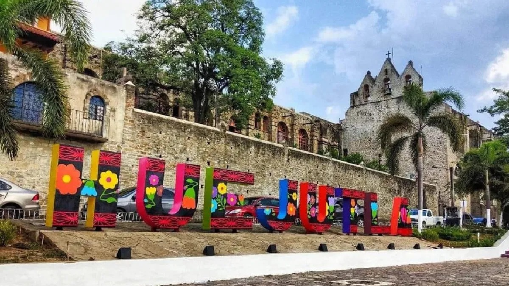
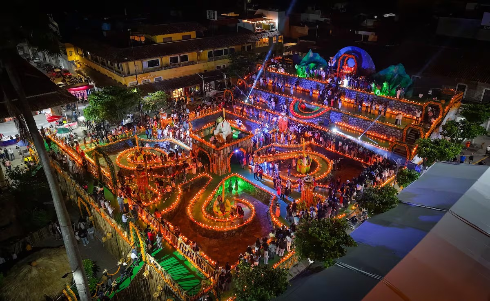

Yo vivo actualmente en Huejutla de Reyes, Hidalgo. Aqui he pasado toda mi vida y es un lugar que me gusta mucho, ya que me gusta su comida.

Mi comunidad se caracteriza por sus paisajes, sus costumbres y las personas que viven en ella. Es un lugar donde existen diferentes actividades y tradiciones.
Algunas de las costumbres y tradiciones que se arealizan aqui son: El xantolo que es la tradicion que mas me gusta, que se celebra del 31 de octubre al 2 de noviembre. Carnaval que se celebra en febrero y marzo en la cuaresma.
